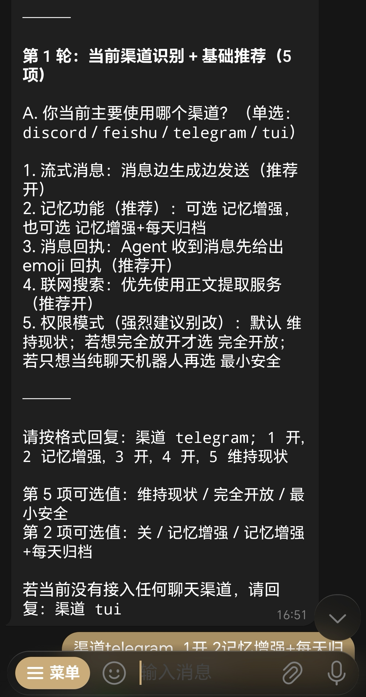
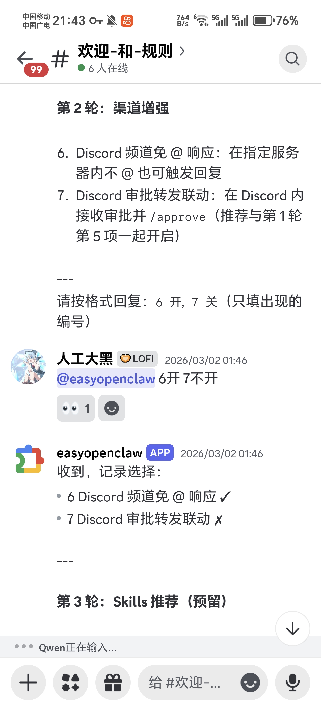
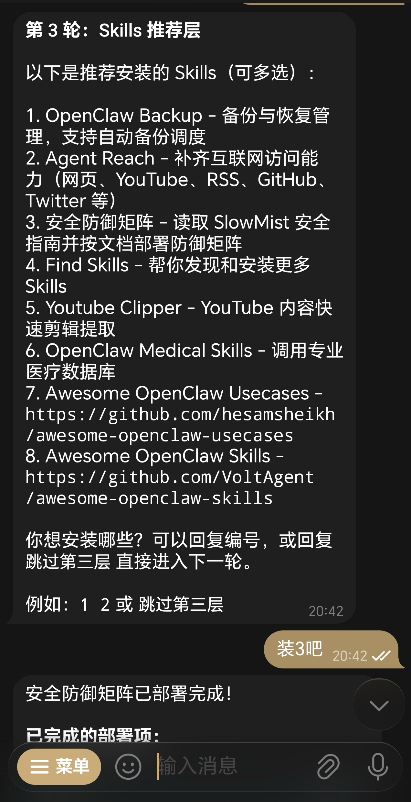
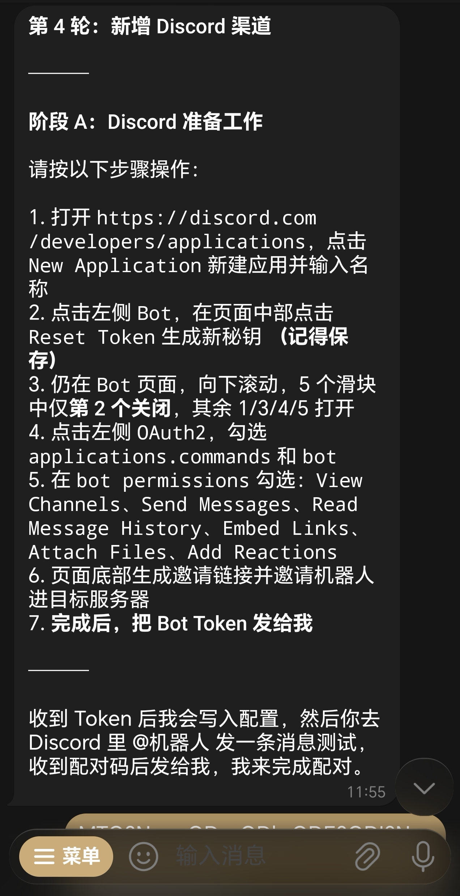

OPENCLAW SKILL
easy-openclaw
不用手改 JSON，不用记命令，把常用优化、渠道接入和 Skill 安装一次走完。
只要跟你的小龙虾说：请从 https://github.com/daheiai/easy-openclaw 安装并启用这个 skill。
流程预览
像滑动对话截图一样，看完整个配置过程
中间是当前主画面，左右保留前后轮次预览。4 轮对话即可完成全部设置。

Round 01
先把最常用的 5 项配置一口气问完
流式消息、记忆功能、消息回执、联网搜索、权限模式，先收集选择，再统一执行。

Round 02
按当前渠道补强，而不是让用户自己翻配置
Discord、Telegram、Feishu 分支按需提问，高危 Exec 审批也在这一轮集中收集。

Round 03
想扩展能力，直接点名安装
从备份、互联网访问到安全防御矩阵，用户选几个就装几个，不再把系统默认清单混进来。

Round 04
需要继续接 Discord、Telegram、Feishu，就把最后一轮走完
按步骤拿回必要信息，最后统一写入配置并完成验收，不让用户来回跳上下文。
开发投入
多天反复测试打磨
投入
约 1.99 亿 Tokens
累计总 Token 约 199,457,331，高频反复测试、修正和收敛之后的总投入。
过程
来回踩了不少坑
- 第一层一开始越改越散，后来才重新收拢成固定 5 项
- 备份最早想做"最小备份"，最后还是改成整包备份
~/.openclaw/ - 审批一度放错位置，还出现过"全都要批"或者"根本批不动"
- 第三层最容易跑偏，模型会偷偷换成系统默认 Skills 列表
- 真实测试里还出现过装错 Skill、乱装、执行完失联
开始使用
现在就从 ClawHub 安装 easy-openclaw
如果你想把 OpenClaw 的初始化流程变得更像"对话式安装向导"，这就是当前最直接的入口。
一旦出现任何问题，你也可以从项目根目录找到整个 OpenClaw 的备份，解压覆盖后就能恢复原状。